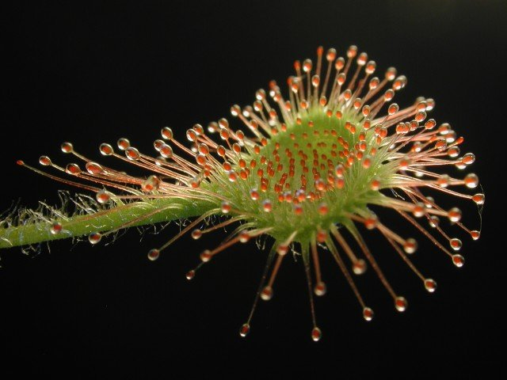
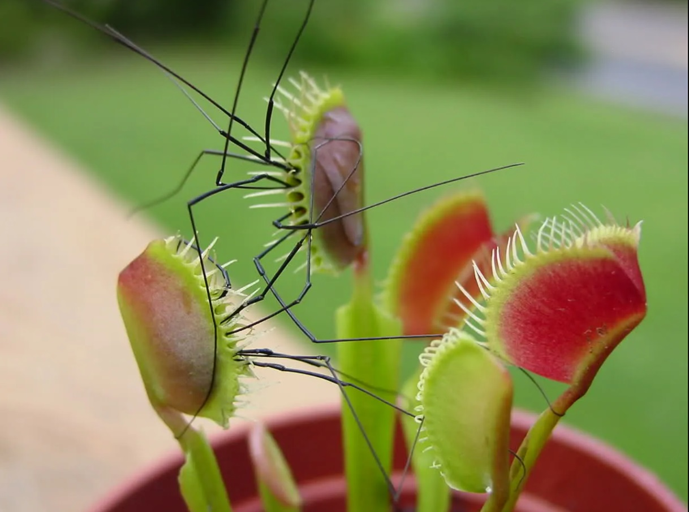

Тільки уяви собі, ця унікальна рослина їсть комах! Листя росянки виділяє крапельки клейкої речовини, що паралізує комаху і згодом «перетравлює» її. Як тільки жертва сяде на рослину, листок росянки згортається, повністю огортаючи комаху.
Дивовижні рослини Землі
Рослини хижаки
Росянка

Венерина мухоловка
Венерина мухоловка споживає переважно повзаючих комах, а запилюється літаючими видами. Дослідники виявили, що це пов’язано з тим, що квіти знаходяться на висоті 15-25 см, тоді як схоже на пастки листя розташоване близько до землі. Венерина мухоловка дуже добре розрізняє різни типи подразників. Ця хижа рослина зовсім не реагує на краплі дощу або якісь неїстивні об’єкти. Якщо комаха занадто мала і не варта витрат на перетравлення, то механізм лову венериної мухоловки не спрацює. Занадто велика здобич може повністю знищити пастку. Тому венерина мухоловка повільно закриває пастку лише при появі потрібної їжі.

Непентес Аттенборо
Ця цікава квітка величезного розміру була виявлена на острові Аалаван. Її суцвіття нагадує об'ємні глечики. Виявилося, що ці незвичайні квіти - справжні хижаки, які харчуються гризунами. До цих пір залишається таємницею, як ці квіти змогли зберегтися до нашого часу.